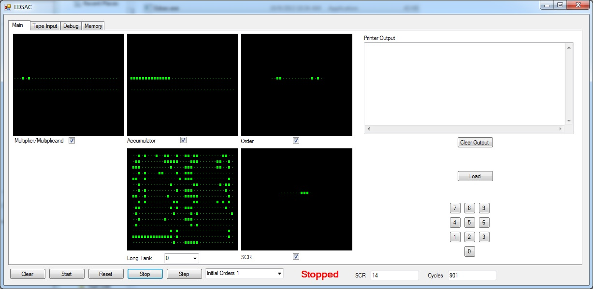
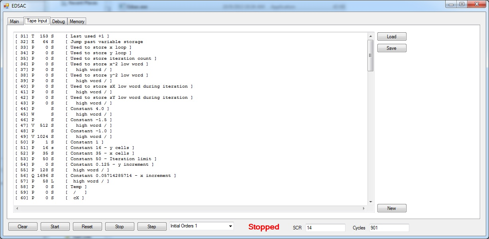
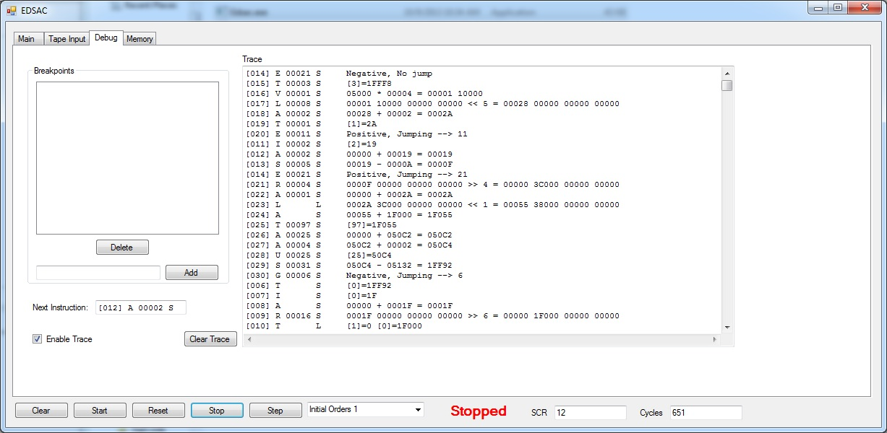
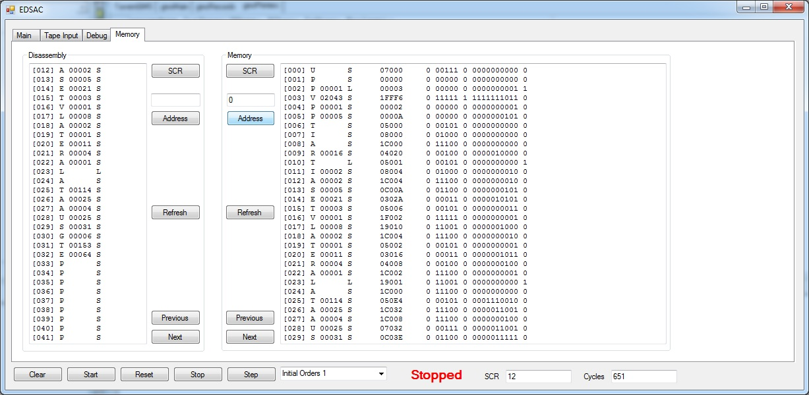

EDSAC was built at the University of Cambridge Mathematical Laboratory and ran
its first programs on May 6, 1949. EDSAC is considered to be the second stored
program computer and is considered to be the first computer to provide a
regular computing service. When originally built EDSAC had a memory capacity
of 512 18-bit words which was later expanded to 1024 words. EDSAC had a
punch tape reader for reading in programs and data and a teleprinter for
output.
Note: This program requires .net 4.0 framework to be installed
http://www.dcs.warwick.ac.uk/~edsac/ Great resource site for EDSAC, including another simulator.



